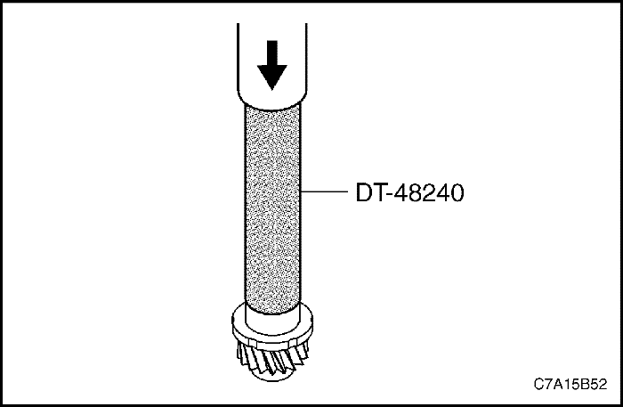


Conjunto del eje secundario
Herramientas necesarias
Instalador del sincronizador de 5ª/marcha atrás de salida DT-48240
Instalador del collarín del cojinete de salida de 5ª DT-48239
Instalador del engranaje de salida de 3ª/4ª DT-48237
Procedimiento de montaje (armado, ensamblaje)
Importante: Lubrique todos los componentes con aceite de la caja de cambios antes de su instalación.
- Instale la arandela de empuje utilizando la DT-48240 y una prensa hidráulica.
- Instale el collarín utilizando la DT-48240 y una prensa hidráulica.
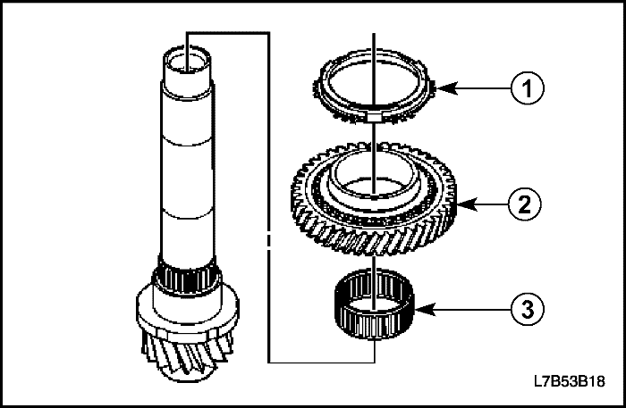
- Monte las jaulas de agujas (3).
- Monte la marcha atrás (2).
- Monte el anillo de bloqueo de marcha atrás (1).
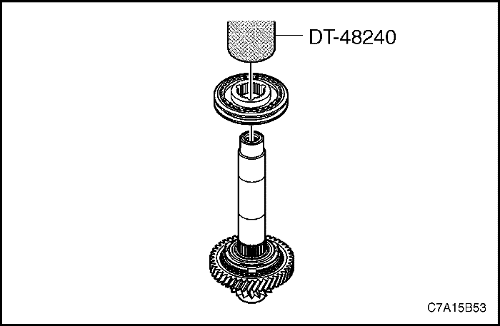
- Instale el sincronizador de 5ª/marcha atrás utilizando la DT-48240 y una prensa hidráulica.
Importante:
- El buje central elevado del conjunto del sincronizador de 5ª/marcha atrás está enfrente del conjunto de 5ª.
- Alinee las lengüetas del anillo de bloqueo y los chaveteros del cubo mientras presiona.
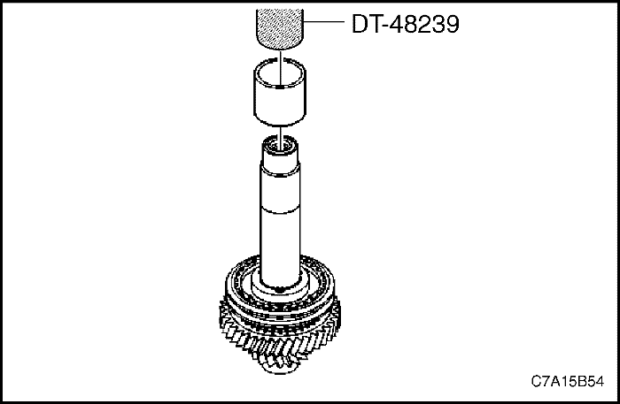
- Instale el collarín del cojinete utilizando la DT-48239 y una prensa hidráulica.
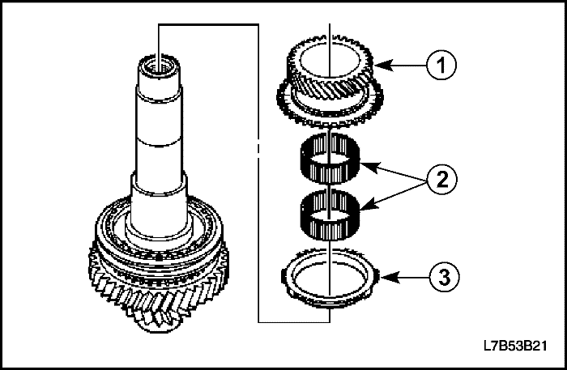
- Monte el anillo de bloqueo de 5ª (3).
- Monte las dos jaulas de agujas (2).
- Monte el conjunto de 5ª (1).
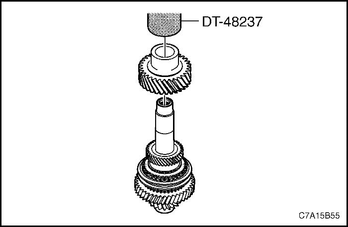
- Instale el conjunto de 3ª utilizando la DT-48237 y una prensa hidráulica.
Importante: El engranaje de 3ª está muy apretado. Asegúrese de que las superficies de contacto están limpias.
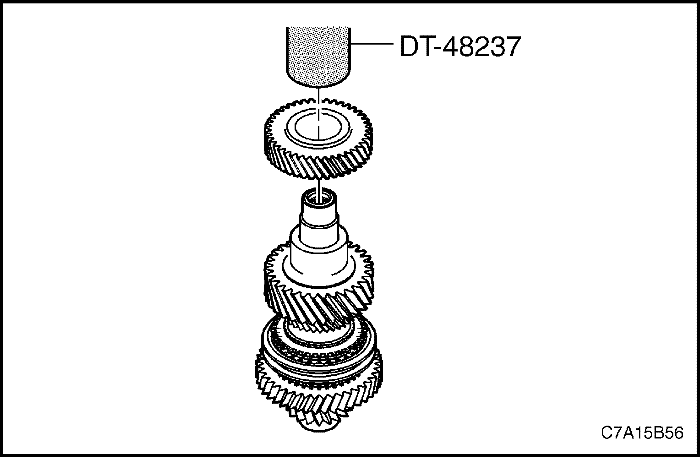
- Aplique sellador-fijador (Permatex 620) en la circunferencia del eje primario antes de instalar el engranaje de 4ª.
- Instale el conjunto de 4ª utilizando la DT-48237 y una prensa hidráulica.
Importante: El engranaje de 4ª está muy apretado. Asegúrese de que las superficies de contacto están limpias.
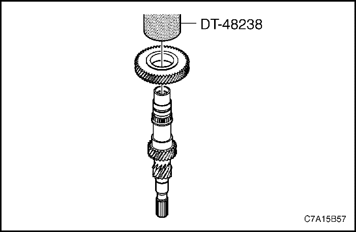
Conjunto del eje primario
Herramientas necesarias
Instalador del engranaje de entrada de 5ª DT-48238
Instalador del sincronizador de entrada de 3ª/4ª DT-48236
Procedimiento de montaje (armado, ensamblaje)
Importante:
- Lubrique todos los componentes con aceite de la caja de cambios antes de su instalación.
- La superficie rectificada se sitúa frente al cojinete de empuje de agujas.
- Aplique sellador-fijador (Permatex 620) en la circunferencia del eje primario antes de instalar el engranaje de 5ª.
- Instale el conjunto de 5ª utilizando la DT-48238 y una prensa hidráulica.
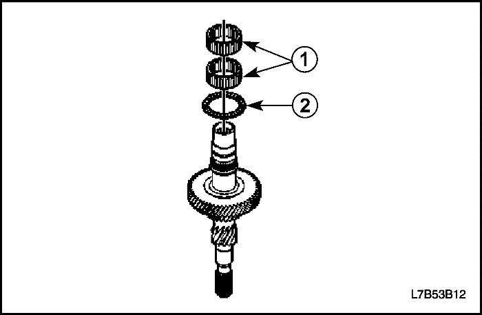
- Coloque el cojinete de empuje (2).
- Monte las dos jaulas de agujas (1).
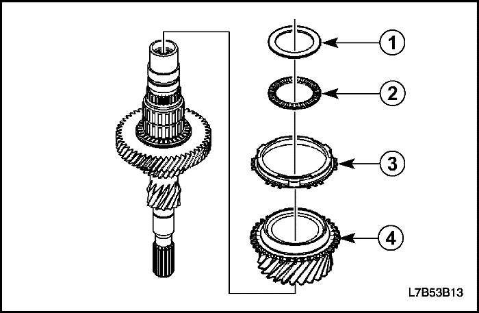
- Monte el conjunto de 3ª (4).
- Monte el anillo de bloqueo de 3ª (3).
- Coloque el cojinete de empuje (2).
- Ponga la arandela de empuje (1).
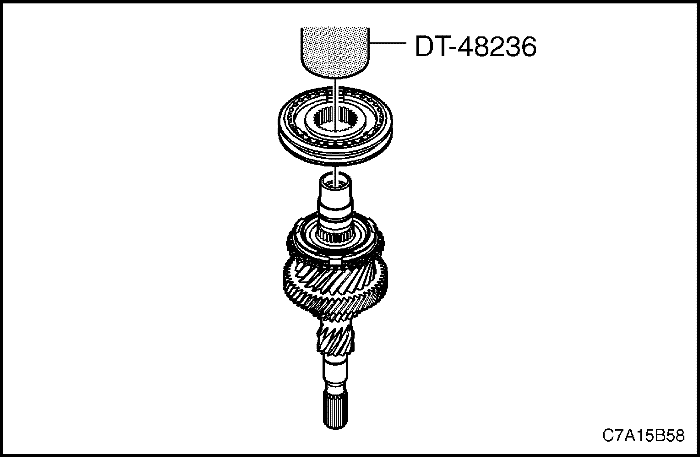
- Instale el sincronizador de 3ª/4ª utilizando la DT-48236 y una prensa hidráulica.
Importante:
- La superficie rectificada del sincronizador se sitúa frente a la arandela de empuje.
- Asegúrese de alinear las ranuras del sincronizador con las lengüetas de bloqueo del engranaje.
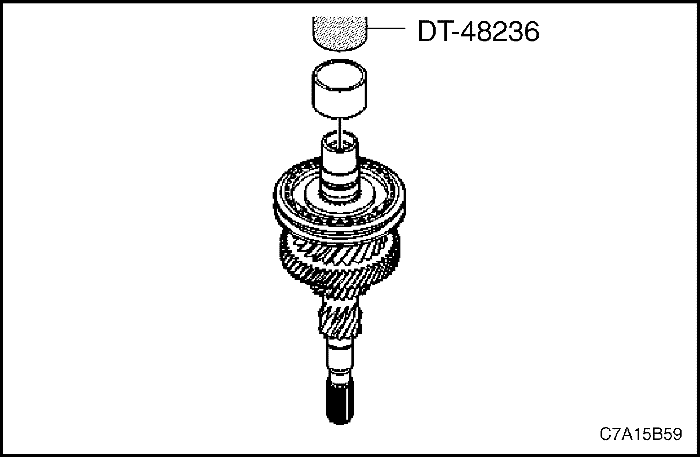
- Instale el collarín del cojinete utilizando la DT-48236 y una prensa hidráulica.

- Monte el anillo de bloqueo de 4ª (4).
- Monte la jaula de agujas (3).
- Monte el conjunto de 4ª (2).
- Ponga la arandela de empuje (1).
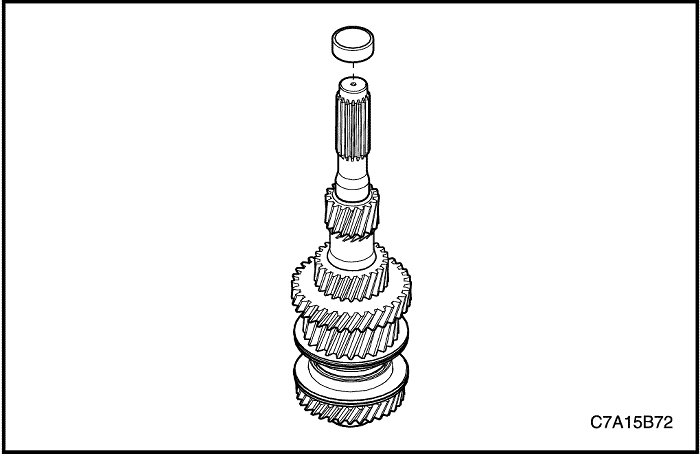
- Instale el cojinete del manguito utilizando una herramienta adecuada.
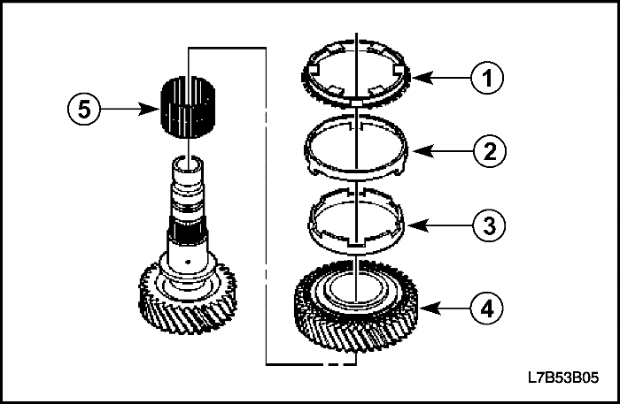
Conjunto de eje intermedio
Herramientas necesarias
Instalador del sincronizador de 1ª/2ª intermedio DT-48235
Procedimiento de montaje (armado, ensamblaje)
Importante: Lubrique todos los componentes con aceite de la caja de cambios antes de su instalación.
- Monte la jaula de agujas (5).
- Monte el conjunto de 2ª (4).
- Monte el cono interior de 2ª (3).
- Monte el anillo de bloqueo de 2ª (2).
- Monte el cono exterior de 2ª (1).
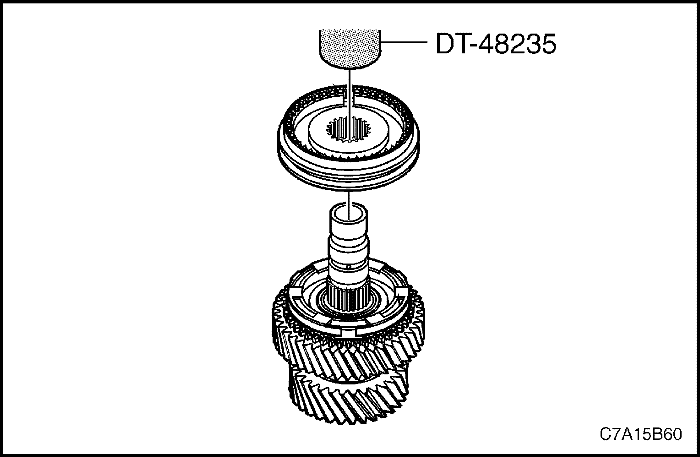
- Instale el sincronizador de 1ª/2ª utilizando la DT-48235 y una prensa hidráulica.
Importante:
- Asegúrese de alinear adecuadamente el sincronizador a la marcha y a las ranuras del anillo de bloqueo.
- Observe la orientación del sincronizador. El hombro del sincronizador se sitúa frente al engranaje de 1ª.
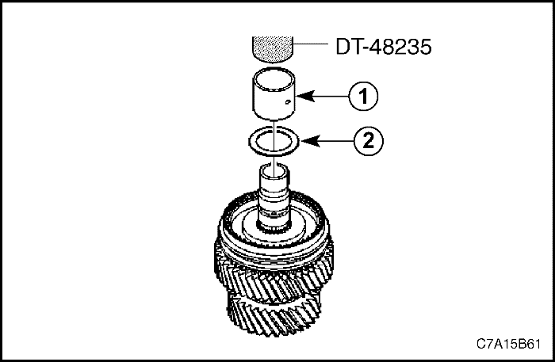
- Instale la arandela de empuje (2) y el collarín del cojinete (1) utilizando la DT-48235 y una prensa hidráulica.
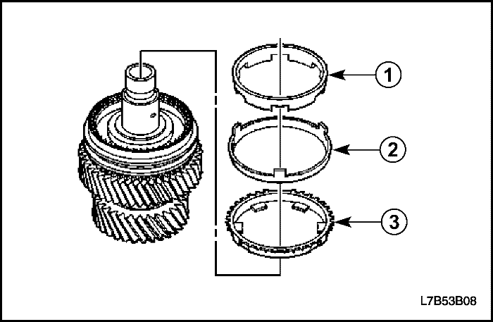
- Instale el cono exterior de 1ª (3).
- Monte el anillo de bloqueo de 1ª (2).
- Instale el cono interior de 1ª (1).
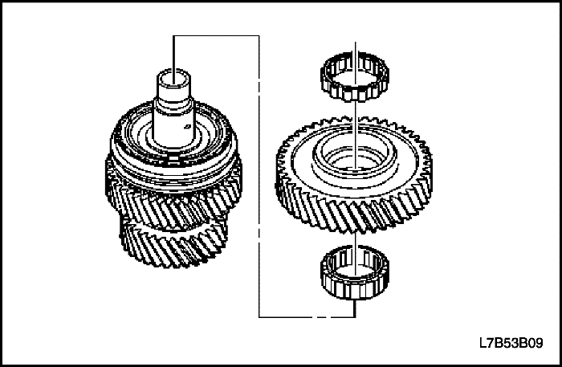
Importante: Los pasos de los cojinetes de rodillos deben caer en el engranaje de 1ª.
- Monte el cojinete de rodillo.
- Monte el conjunto de 1ª.
- Monte el cojinete de rodillo.
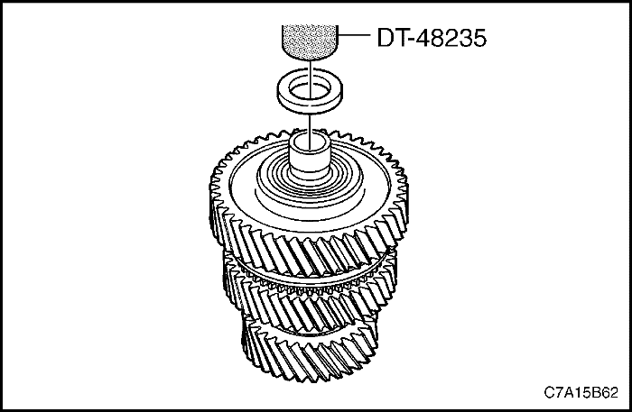
- Instale la arandela de empuje utilizando la DT-48235 y una prensa hidráulica.
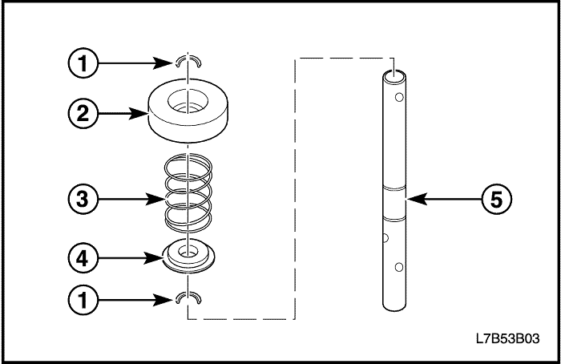
Conjunto del eje de cambio
Procedimiento de montaje (armado, ensamblaje)
- Monte el disco de ángulo (4) en la varilla de cambio (5).
- Monte el muelle de presión de 1ª/2ª (3).
- Monte el asiento del muelle interior (2).
- Instale los nuevos anillos elásticos (1).
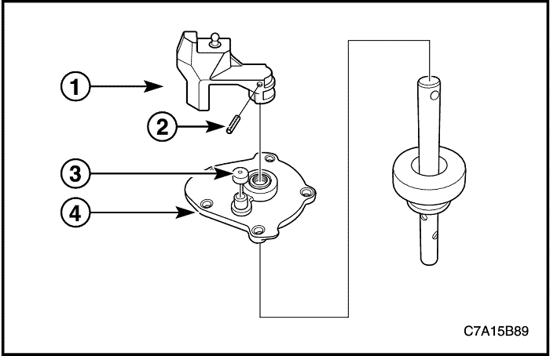
- Monte la tapa del cambio (4).
- Coloque el tapón de ventilación (3).
- Instale la palanca de cambios (1).
- Instale un nuevo pasador espiral (2).
- Instale el muelle de presión de 5ª/marcha atrás (1).
- Monte el asiento del muelle exterior (2).
- Instale el enclavamiento del cambio (3) en la garra del cambio (4).
Importante: Apoye adecuadamente el dedo del cambio (4) al instalar el pin helicoidal. No apoye la garra del cambio (4) en el enclavamiento del cambio (3).
- Instale un nuevo pasador espiral (5).
- Instale un nuevo pasador espiral (6).
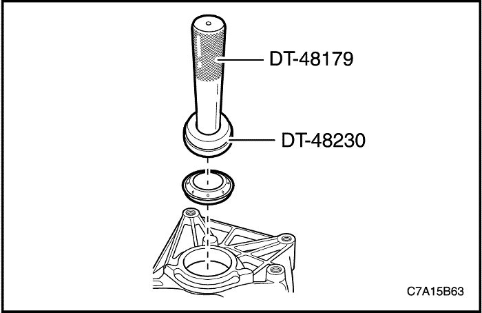
Montaje de los componentes principales
Herramientas necesarias
Mango del botador universal DT-48179
Extractor/instalador de manguitos de aguja DT-48182
Soporte del eje primario DT-48225
Extractor/instalador de cojinetes de bola en la ranura del alojamiento de la caja de cambios DT-48226
Extractor/instalador de cojinetes y engranajes DT-48227
Extractor/instalador de cojinetes de bola en la ranura del alojamiento del embrague DT-48228
Instalador de la pista del cojinete del diferencial y de la junta del eje DT-48230
Instalador/extractor del eje primario y secundario DT-48231
Protector del cuerpo de sincronización del eje primario DT-48232
Procedimiento de montaje (armado, ensamblaje)
- Instale una nueva junta del eje en el alojamiento del embrague utilizando la DT-48179 y la DT-48230.
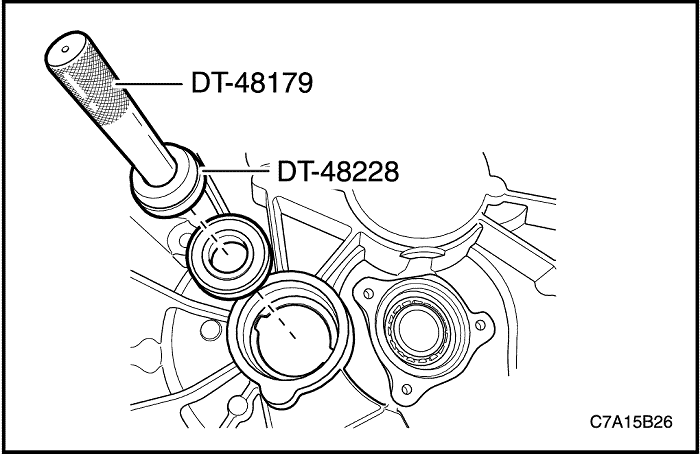
- Instale el cojinete de bola de la ranura del eje intermedio en el alojamiento del embrague, utilizando la DT-48179 y la DT-48228.
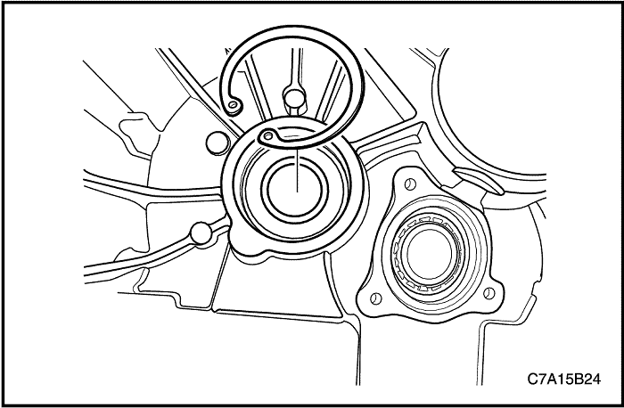
- Instale el anillo elástico en el cojinete de bola de ranura del eje intermedio.
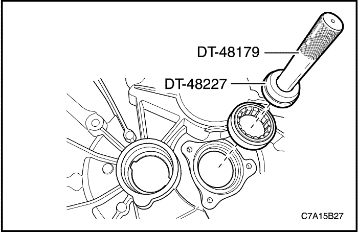
- Monte el cojinete de rodillo del eje primario en el alojamiento del embrague, utilizando la DT-48179 y la DT-48227.
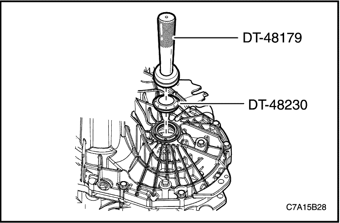
- Instale una nueva junta del eje en el alojamiento de la caja de cambios utilizando la DT-48179 y la DT-48230.
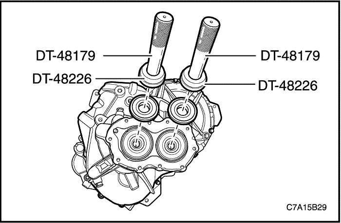
- Monte y los cojinetes de bola de la ranura del eje primario y secundario del alojamiento de la caja de cambios utilizando la DT-48179 y la DT-48226.
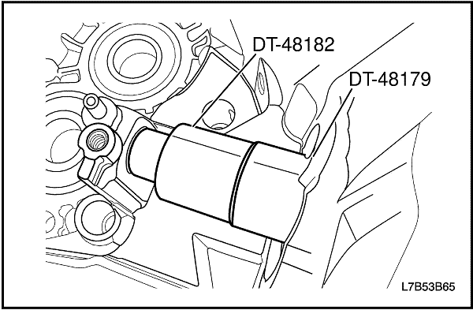
- Instale el manguito de agujas con la pieza fundida del alojamiento de la caja de cambios utilizando la DT-48179 y la DT-48182.
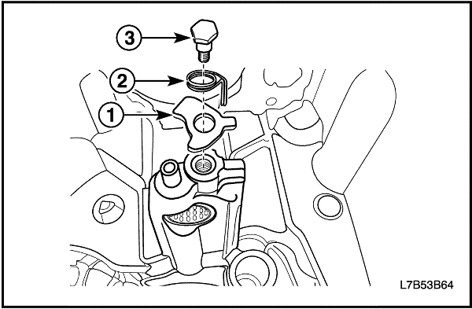
- Instale el dispositivo de bloqueo de de cambio a marcha atrás (1), el muelle de torsión (2) y un nuevo pasador roscado (3) en el alojamiento de la caja de cambios.
Apretar
Apriete el pasador roscado 6~9 N•m (53~80 lb-pulg.).
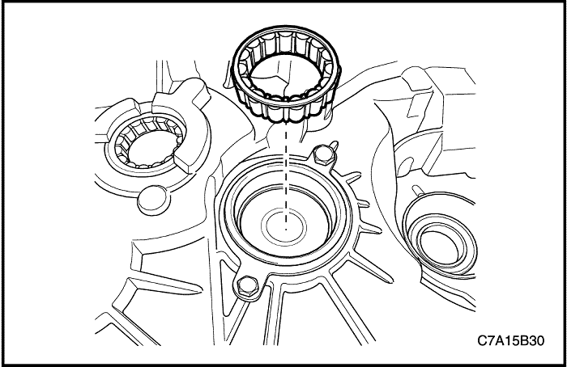
- Instale el cojinete de rodillo del eje secundario en el alojamiento del embrague.
Importante: Tenga cuidado con la dirección del cojinete de rodillos.
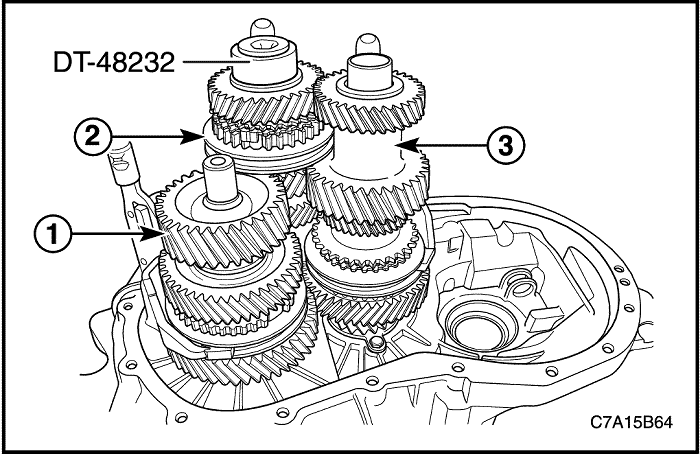
- Monte el conjunto del eje intermedio (1), primario (2) y secundario (3) con las respectivas horquillas de selección en el alojamiento del embrague.
- Instale la DT-48232 y el tapón de retención del eje primario.
- Instale el conjunto del eje intermedio (1) y primario (2) con sus respectivas horquillas de selección.
Importante: Coloque el eje intermedio en el lado del cojinete de bola de la ranura.
- Instale el conjunto del eje secundario y la horquilla de selección.
- Después de comprobar el accionamiento de las marchas, instale completamente los conjuntos de todos los ejes.
- Desmonte la DT-48232 y el tapón de retención del eje primario.
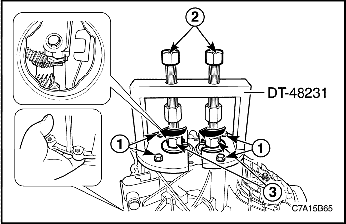
- Monte el alojamiento de la caja de cambios en el alojamiento del embrague.
- Los ejes primario y secundario deben acoplarse en los cojinetes de bola de la ranura, en el alojamiento de la caja de cambios.
- El eje intermedio y las horquillas de selección se sientan en sus cojinetes opuestos, en el alojamiento de la caja de cambios.
- Monte la DT-48231 en el alojamiento de la caja de cambios.
- Apriete los 4 tornillos (1).
- Enrosque los vástagos en el eje primario y secundario.
- Coloque de forma equilibrada el eje primario y el secundario en los cojinetes de bola de la ranura, en el alojamiento de la caja de cambios.
- Sujete los vástagos (2) utilizando una herramienta adecuada.
- Gire las tuercas (3) en el sentido de la flecha.
- Extraiga la DT-48231 del alojamiento de la caja de cambios.
- Desenrosque los vástagos en el eje primario y secundario.
- Quite los cuatro tornillos (1).
Importante: Si se necesitan grandes fuerzas para accionar la DT-48231, separe de nuevo el alojamiento de la caja de cambios y el del embrague, y compruebe la posición del eje y de las horquillas de selección. Repita la operación.
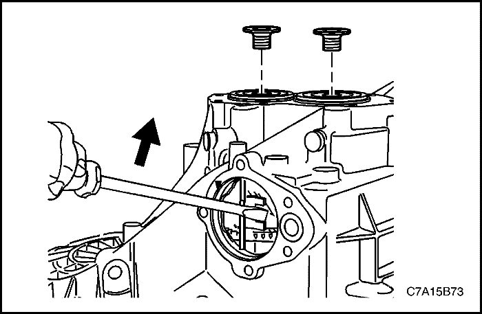
- Cambie a 4ª y 5ª utilizando un destornillador en dirección hacia arriba.
- Instale nuevos tapones de retención para los ejes primario y secundario mientras mantiene la caja de cambios en 4ª o 5ª, en dirección hacia arriba.
Apretar
Apriete el tapón de retención del eje primario hasta 120-130 N•m (89-96 lb-pie).
Apriete el tapón de retención del eje secundario 120-130 N•m (89-96 lb-pie).
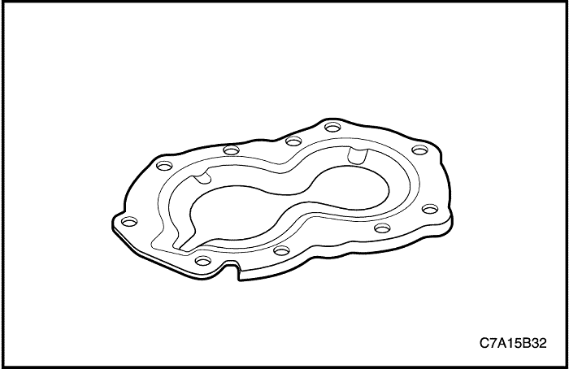
- Aplique sellante (Loctite 5900) en la tapa trasera del alojamiento de la caja de cambios.
Importante: Deje libre la zona para no bloquear el tubo de aceite.
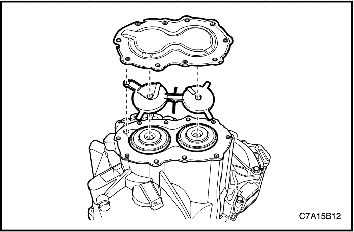
- Instale el tubo del aceite y la tapa trasera del alojamiento de la caja de cambios.
Importante: El tubo del aceite sólo se instala en una dirección. Asegúrese de que el tubo de aceite está totalmente asentado en los ejes de las marchas.
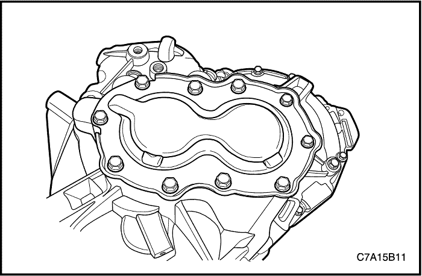
- Coloque los tornillos de la tapa trasera del alojamiento de la caja de cambios.
Apretar
Apriete los tornillos de la tapa trasera hasta 20-25 N• m (15-18 lb-pie).
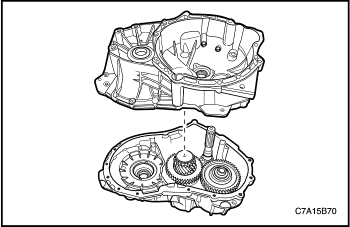
- Desmonte el alojamiento del embrague del alojamiento de la caja de cambios.
Importante: En línea con el eje intermedio, utilice herramientas adecuadas para ayudar a la separación de los alojamientos.
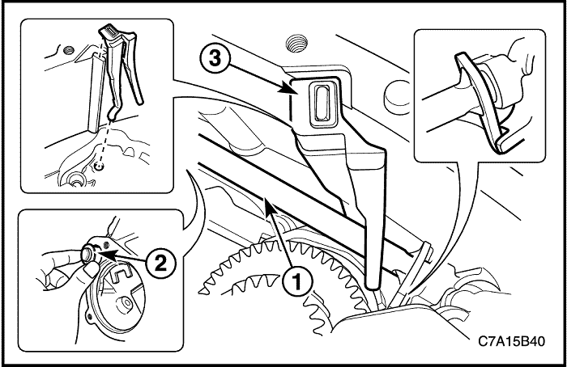
- Instale el raíl de cambio al ralentí (1) en el alojamiento de la caja de cambios.
- Instale el casquillo del raíl de cambio al ralentí (2) en el alojamiento de la caja de cambios.
- Coloque el canal de drenaje (3) en el alojamiento de la caja de cambios.
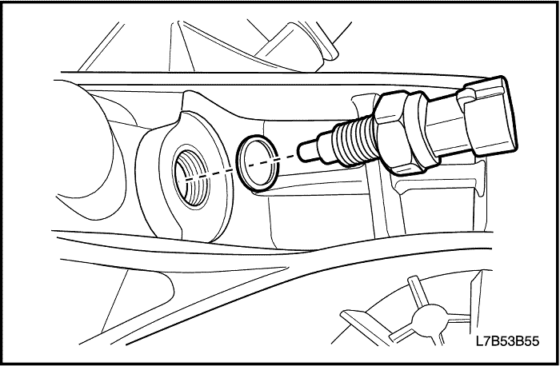
- Monte el interruptor de la luz de marcha atrás y la arandela en el alojamiento de la caja de cambios.
Apretar
Apriete el interruptor de la luz de marcha atrás hasta 20 N•m (15 lb-pie).
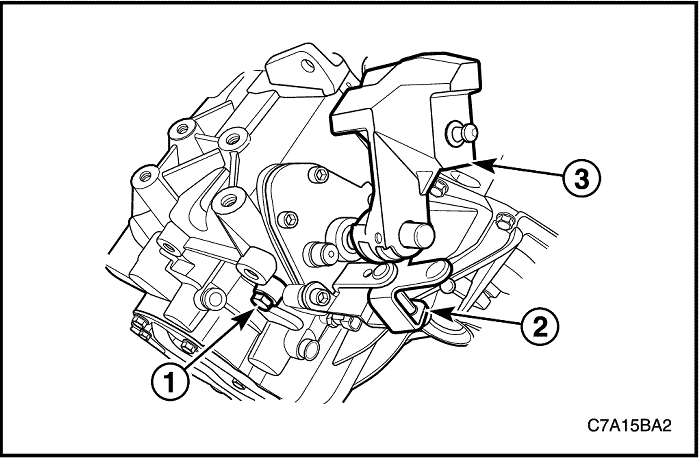
- Monte el conjunto de ejes del cambio de marchas.
- Aplique sellante (Loctite 5203) en el alojamiento de la caja de cambios, en la superficie de contacto de la cubierta del cambio de marchas.
- Coloque la caja de cambios en punto muerto.
- Monte el conjunto de ejes del cambio de marchas (3).
- Monte la palanca selectora (2).
- Ponga los tornillos de fijación del cambio.
Apretar
Apriete los tornillos de fijación del cambio hasta 20-25 N•m (15-18 lbs-pie).
- Coloque el tornillo de la guía de cambio (1).
Apretar
Apriete el tornillo de la guía del cambio hasta 20-25 N•m (15-18 lb-pie).
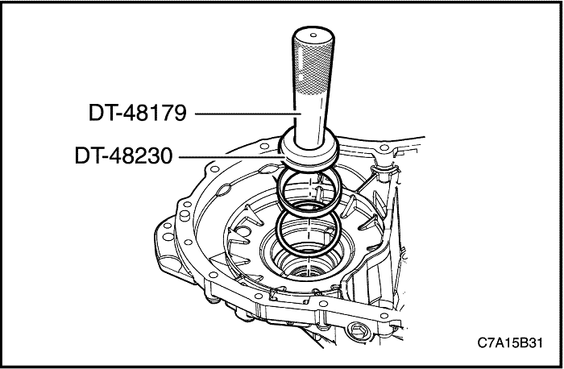
- Instale la pista del cojinete del diferencial y el suplemento en el alojamiento de la caja de cambios, utilizando la DT-48179 y la DT-48230. Consulte el apartado "Procedimientos de acuñamiento" de esta sección.
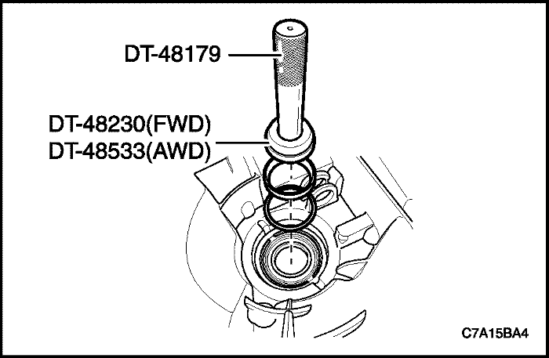
- Monte la pista del cojinete del diferencial y el suplemento en el alojamiento del embrague usando la DT-48230 (para FWD) o la DT-48533 (para AWD) con la herramienta DT-48179. Consulte el apartado "Procedimientos de acuñamiento" de esta sección.
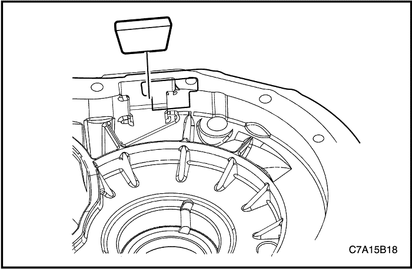
- Monte el imán en el alojamiento de la caja de cambios.
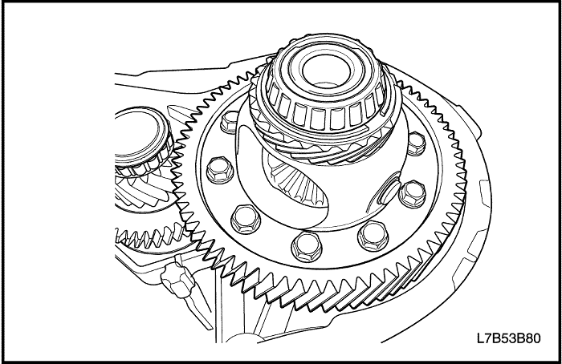
- Coloque el diferencial en el alojamiento de la caja de cambios.
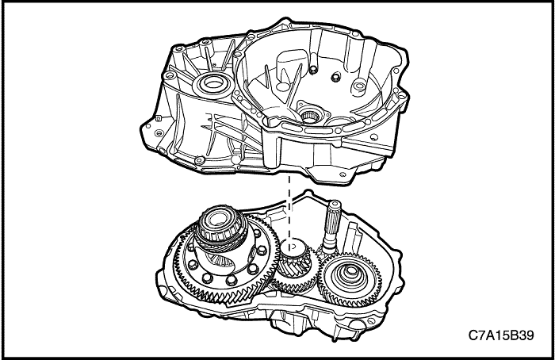
- Aplique sellante (Loctite 5203) en el alojamiento de la caja de cambios, en la superficie de contacto del alojamiento del embrague.
- Instale el alojamiento del embrague en el alojamiento de la caja de cambios.
Importante:
- El eje primario y secundario debe acoplarse en su cojinete, en el alojamiento del embrague.
- Las horquillas de selección de marchas se asientan en sus cojinetes contrarios, en el alojamiento del embrague.
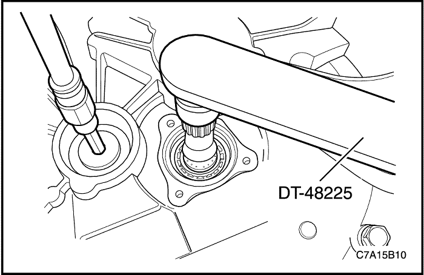
- Sujete el eje primario con la DT-48225.
- Coloque el eje intermedio en el cojinete de bola de la ranura del eje intermedio, con el tapón de retención antiguo.
- Coloque la palanca de cambio en cualquier velocidad.
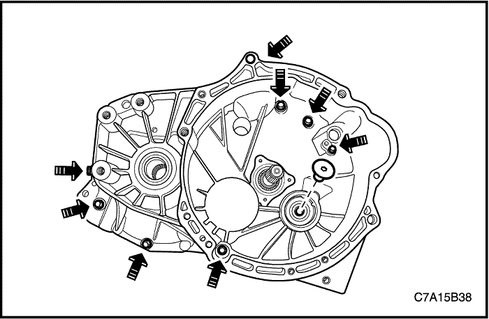
- Coloque los tornillos del alojamiento del embrague en el alojamiento de la caja de cambios.
Apretar
Apriete los tornillos del alojamiento del embrague al alojamiento de la caja de cambios hasta 20-25 N•m (15-18 lb-pie).
- Desmonte el tapón de retención antiguo del eje intermedio e instale uno nuevo.
Apretar
Apriete el tapón de retención del eje intermedio 90-100 N•m (66-74 lb-pie).
- Desmonte la DT-48225.
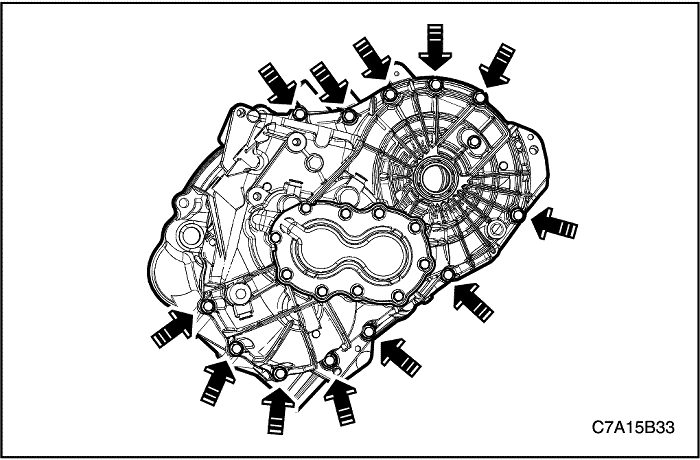
- Coloque los tornillos del alojamiento de la caja de cambios al alojamiento del embrague.
Apretar
Apriete los tornillos del alojamiento de la caja de cambios al alojamiento del embrague hasta 20-25 N•m (15-18 lb-pie).
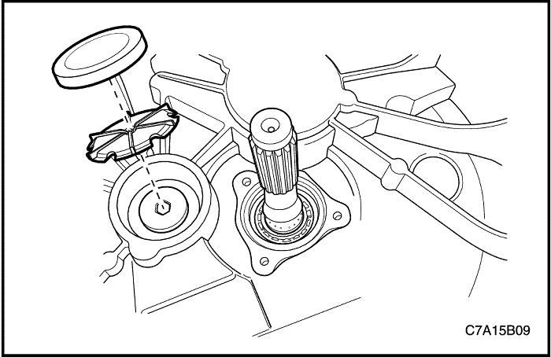
- Instale un nuevo tubo de aceite en el eje intermedio.
- Instale un nuevo tapón de sellado en el eje interno.
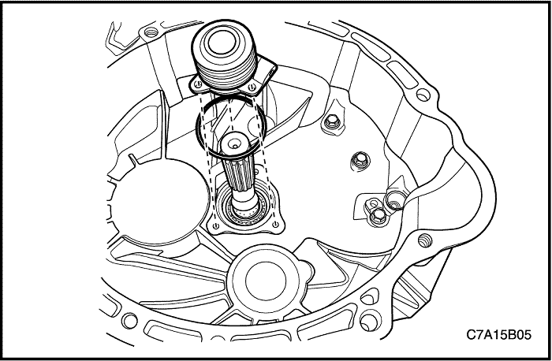
- Instale la junta tórica y el cilindro esclavo concéntrico.
- Tras colocar provisionalmente el tornillo del tubo, apriete los tornillos de fijación del cilindro esclavo concéntrico.
Apretar
Apriete los tornillos de fijación del cilindro esclavo concéntrico hasta 8-12 N•m (71-106 lb-pulg.).
- Apriete el tornillo del tubo.
Apretar
Apriete el tornillo del tubo hasta 16 N•m (12 lb-pie).
- Coloque el casquillo en el tubo del cilindro esclavo concéntrico.
- Instale el soporte del cable de control del cambio, la arandela y los tornillos.
Apretar
Apriete los tornillos del soporte del cable de mando del cambio de marchas hasta 15-20 N• m (11-15 lb-pie).
- Monte la caja de cambios en el vehículo. Consulte el apartado "Conjunto de la caja de cambios" de esta sección.
Procedimientos de acuñamiento
Herramientas necesarias
Fijación del alojamiento de la caja de cambios DT-48200
Plato de la pista del alojamiento de la caja de cambios DT-48241
Plato de la pista del alojamiento del embrague DT-48242
- Utilizando un martillo de goma, golpee ligeramente en la superficie de contacto del alojamiento de la caja de cambios para asegurarse de que los cojinetes están bien asentados.
- Monte la DT-48200 en el alojamiento de la caja de cambios.
- Ajuste el el punto de ajuste cero para cada punto de la superficie de unión del alojamiento de la caja de cambios, utilizando la DT-48200 y el medidor de altura.
Importante: Ajuste la altura de la DT-48200 para el ajuste del punto cero.
- Mida los tres puntos en la superficie de la arandela de empuje del engranaje del eje secundario, utilizando un medidor de alturas (media = A).
- La altura desde la superficie de unión del alojamiento de la caja de cambios hasta la superficie de la arandela de empuje.
- Coloque la pista del cojinete del diferencial del alojamiento del embrague, el diferencial, el alojamiento de la caja de cambios y la herramienta DT-48241 en la DT-48242 (para FWD) o la DT-48534 (para AWD).
- Ajuste el punto cero de ajuste de cada punto en la superficie de la pista del cojinete del diferencial del alojamiento de la caja de cambios, utilizando el medidor de alturas.
- Mida los tres puntos en la superficie de la corona del diferencial, utilizando el medidor de alturas (media = B).
- La altura de la pista del cojinete del diferencial del alojamiento de la caja de cambios hasta la superficie de la corona del diferencial.
- Mida los tres puntos en la DT-48242 (para FWD) o la DT-48534 (para AWD) utilizando un medidor de alturas (media = C).
- La altura desde la pista del cojinete del diferencial del alojamiento de la caja de cambios hasta la pista del cojinete del diferencial del alojamiento del embrague.
- Para obtener el tamaño del suplemento para el alojamiento de la caja de cambios, utilice la siguiente fórmula.
- S1(Tanto para FWD como para AWD) = 62,92 mm - A - B
- Para obtener el tamaño del suplemento para el alojamiento del embrague, utilice la siguiente fórmula.
- S2 (para FWD) = 156,84 mm - C - S1
- S2 (para AWD)= 158,09 mm - C - S1
- Espec. Suplemento (tolerancia: -0,03)
- - Para FWD, tamaño de suplemento del alojamiento de la caja de cambios y del alojamiento del embrague.
- - Para AWD, tamaño de suplemento del alojamiento de la caja de cambios.
(Unidad: mm)
Número de pieza | Tamaño del suplemento | Número de pieza | Tamaño del suplemento |
96420170 | 0.50 | 96420161 | 0.95 |
96420169 | 0.55 | 96420160 | 1.00 |
96420168 | 0.60 | 96420159 | 1.05 |
96420167 | 0.65 | 96420158 | 1.10 |
96420166 | 0.70 | 96420157 | 1.15 |
96420165 | 0.75 | 96420156 | 1.20 |
96420164 | 0.80 | 96420155 | 1.25 |
96420163 | 0.85 | 96420154 | 1.30 |
96420162 | 0.90 | 96420153 | 1.35 |
- Espec. Suplemento (tolerancia: -0,03)
- - Para AWD, tamaño de suplemento del alojamiento del embrague.
(Unidad: mm)
Número de pieza | Tamaño del suplemento | Número de pieza | Tamaño del suplemento |
96420188 | 0.50 | 96420179 | 0.95 |
96420187 | 0.55 | 96420178 | 1.00 |
96420186 | 0.60 | 96420177 | 1.05 |
96420185 | 0.65 | 96420176 | 1.10 |
96420184 | 0.70 | 96420175 | 1.15 |
96420183 | 0.75 | 96420174 | 1.20 |
96420182 | 0.80 | 96420173 | 1.25 |
96420181 | 0.85 | 96420172 | 1.30 |
96420180 | 0.90 | 96420171 | 1.35 |
 | |  | |
| © Copyright Chevrolet Europe. Reservados todos los derechos |